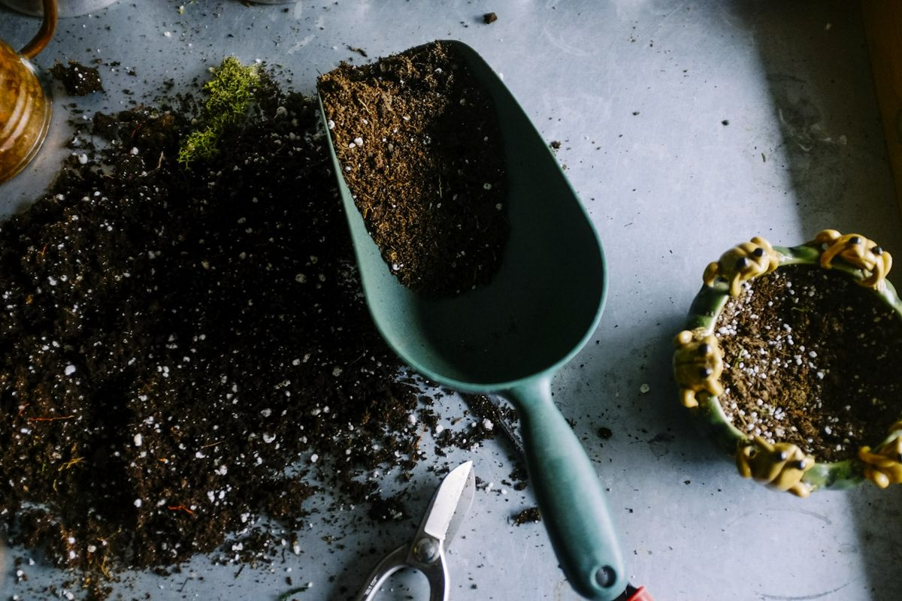
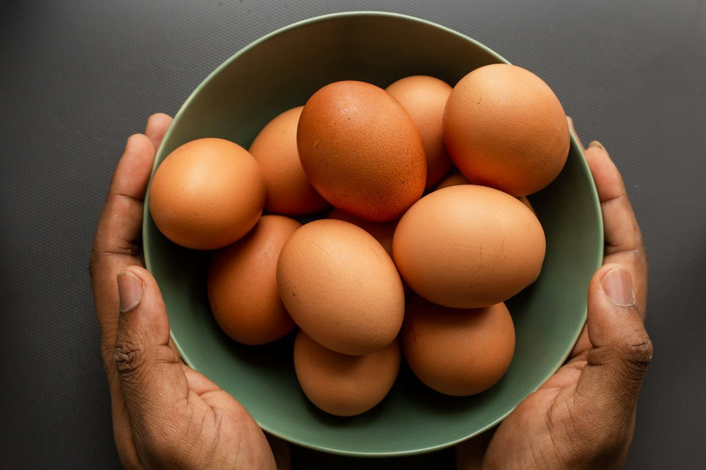

Pastured eggs
A laying flock that lives on grass in mobile coops, moved to fresh ground — the eggs are the farm’s daily bread.
Thirteen acres south of Molalla, toward Silverton — a family farm, worked by the family that lives on it.
Conway Family Farms started in 2020 with a simple order of priorities: take care of the ground, take care of the animals, and the food takes care of itself. We’ve farmed regeneratively and no-till since 2023 — no plowing up the soil life we depend on, and every enterprise on the place has to earn its keep without costing the pasture.
That’s also why we exited cattle: pasture health comes first here, ahead of any single enterprise. When the land said the herd was too much for it, we listened.

A laying flock that lives on grass in mobile coops, moved to fresh ground — the eggs are the farm’s daily bread.

Pigs on pasture, raised in batches matched to the seasons — sold as whole and half shares, weaners, and show pigs through CFF Genetics.

No-till beds feeding the farm stand through the season — what’s ripe is what’s on the table.

Hives along the hedgerows; once they’re established, the bees mostly run themselves and give us raw honey to share.

Our pasture work isn’t just habit — we run USDA/NRCS contract projects on this farm covering pasture management and rotation, high tunnels, and hedgerows, the same practices we’d tell any farm to build on. And every animal movement on the place is recorded for Prop 12 compliance, using CFFOS — the farm software built right here.